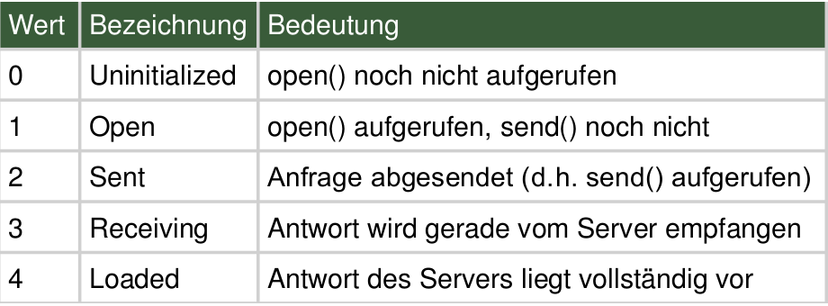

Don't get confused
Zugegeben, die Dokumentation ist echt scheiße
Die Qual eines jeden Software-Entwicklers.
XHR (1)
var xhr = new XMLHttpRequest();
xhr.open('GET', 'http://server/api/');
xhr.responseType = 'json';
xhr.onreadystatechange = function() {
if ((request.readyState === 4)
&& (request.status === 200)
&& (request.responseText !== null)) {
// onsuccess
}
};
xhr.send();
Readystate?
Bearbeitungsstatus (manche Browser unterstützen nur 0, 1 und 4).

Einfacher: XHR2
var xhr = new XMLHttpRequest();
xhr.open('GET', 'http://server/api/');
xhr.responseType = 'json';
xhr.onload = function() {
var data = xhr.response;
if (data !== null) {
console.log(data); // Parsed JSON object
}
};
xhr.send(null);
Event handlers:
- onloadstart – The fetch initiates.
- onprogress – Transmitting data.
- onabort – When the fetch has been aborted. For instance, by invoking the abort() method.
- onerror – The fetch failed.
- onload – The fetch succeeded.
- ontimeout – The author specified timeout has passed before the fetch completed.
- onloadend – The fetch completed (success or failure).
Noch besser:
- getResponseHeader()
- getResponseHeaders()
- responseType
- overrideMimeType()
Alle wollen true!!!!!
xhr.open('GET', 'http://server/api/', true);
Default ist der Flag true.
Und was bedeutet er?